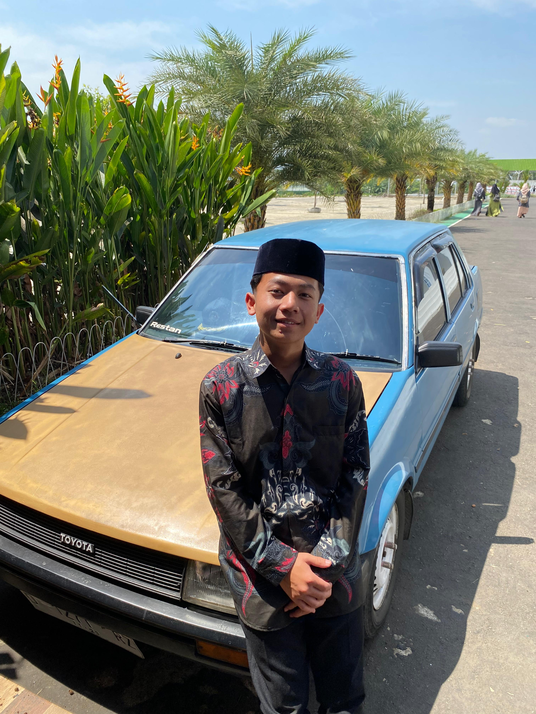

ZULFI KHOERI
About Me

Nama: Zulfi Khoeri
Prodi: TRPL
Kelas: TRPL (25)
Alamat: Majalengka
Riwayat Pendidikan (Table)
| No | Institusi / Sekolah | Keterangan |
|---|---|---|
| 1 | SDN Padarek 3 | Pendidikan Dasar |
| 2 | MTsN 9 Majalengka | Pendidikan Menengah Pertama |
| 3 | SMAT Manahijul Huda | Pendidikan Menengah Atas |
| 4 | Polmanda | Mahasiswa Semester 3 (TRPL) |
Informasi Tambahan (Collapsible)
HTML, CSS, Bootstrap 5, PHP, MySQL, JavaScript, serta Git & GitHub.
Membuat aplikasi To-Do List CRUD PHP, perancangan web CV pribadi, serta sistem informasi manajemen sederhana.
Interaksi Animasi jQuery (Hide / Show / Fade)
Teks atau kotak interaktif ini bisa disembunyikan dan dimunculkan kembali menggunakan animasi jQuery!